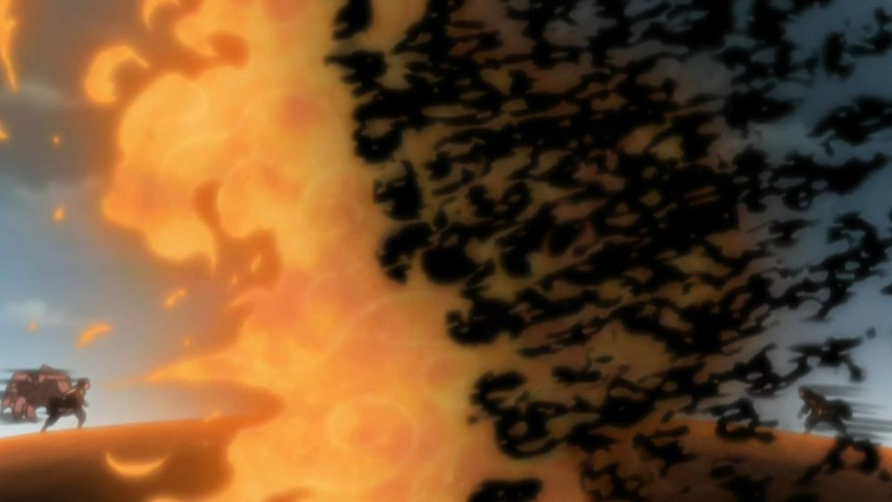
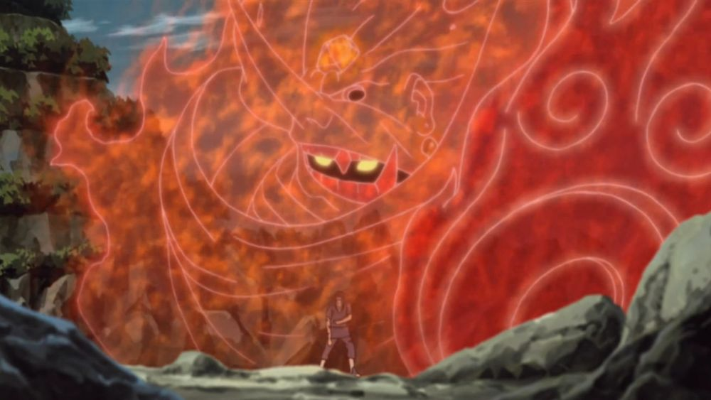

Amaterasu
The inextinguishable flames are the inherent technique of the Uchiha clan that only the Mangekyou users can wield.
Amaterasu is said to be hot as the sun and can only be extinguished if the target burns down completely or the castor dies.
Tsukuyomi
This Jutsu is Itachi's innate ability and is said to be one of the highest levels of Jutsu in the entire series.
This ability allows him to control space and time inside of his Genjutsu.

Susano
Susano is a giant humanoid form of chakra that the user can summon to fight on their behalf.
The form and color of the Susano are unique to a person and Itachi's was a beautiful shade of red.
Izanami
Izanami is a forbidden Jutsu of the Uchiha clan since it claims the user's eyesight at a single use. However, the power it possesses is immense.
It allows the user to create an illusion of a never-ending loop to trap their target for eternity.